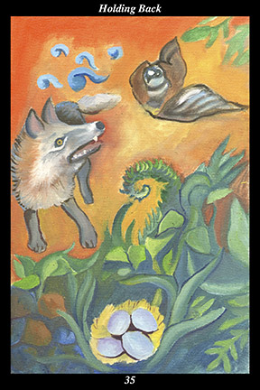

 | IMAGEA mother bird protects her eggs from a young fox by pretending to be wounded. The blue speech glyphs show that she calls attention to herself in order to lead the fox away from her nest. The fox is distracted by what he perceives as easy prey, ready to be led further and further away from the defenseless eggs. |
INTERPRETATION
This hexagram depicts the strategy of confusion and misdirection. The bird symbolizes the one who is seeking to protect something vulnerable and valuable. The fox symbolizes the one who is seeking to take something vulnerable and valuable. The eggs symbolize the goals, accomplishments, and needs of both. The mother bird calling attention to herself by feigning injury represents the tactic of appealing to the greed, ambition, and laziness of an opponent. The young fox getting distracted and led away from his goal by the allure of easy pickings represents the short-sightedness and excitability of the inexperienced. Taken together, these symbols mean that you study the motives of others so that you can mislead them—and see through their attempts to mislead you—as circumstances require.
ACTION
The spirit warrior is sometimes the nesting bird and sometimes the hunting fox: whenever the opportunity for loss and gain presents itself, each side attempts to mislead the other without being misled themselves. Those attempting to prevent a long-range loss try to hide what they most value and offer up a kind of sacrifice they believe their opponent will mistake for the genuine prize. Pretending to be flushed from cover early and acting the part of a flustered and clumsy strategist, such warriors must gamble by offering up something truly valuable if they are to make the bait irresistible enough to distract the opponent from the real prize. For this reason, the bait is not successful if it just misdirects another’s attention—it must also stall matters by tiring the pursuer, making what looked simple and easily acquired increasingly complex and less attainable. Likewise, those attempting to acquire a long-range gain try to ignore short-term distractions and remain focused on uncovering the real prize. Impatience and over-confidence are the surest signs of inexperience in such warriors: pausing to consider why an opponent might surrender too much too soon, the experienced warrior ignores distractions and continues to follow the original scent.
INTENT
Whether you are the pursuer or the pursued, this is a time for holding back: where the mother bird tries to hold back the hunting fox from discovering her nest, the hunting fox tries to hold back his first reaction to jump at every opportunity. In the world of nature, both the nesting bird and the hunting fox are spirit warriors. Every moment of every day is a battle for survival of the individual and the bloodline. Each moment of each day requires unbroken attention to the strategies that enable them to successfully play their part in the on-going work of creation. True spirit warriors master the art of holding back by studying what motivates others—and themselves—to act as they do: the nesting bird succeeds because she knows the fox chases anything that runs from it; the hunting fox succeeds because he knows the bird runs away from the nest to protect her eggs. Study what others hold valuable, study what you yourself hold valuable, and you can successfully act on the purposes you perceive behind every action.
SUMMARY
Slow things down and analyze them rationally. Don’t act on your first reaction. Consider the deeper motives others might have for their actions. Consider how others might likewise be considering your deeper motives. Wait for them to make another move. Create a maze of options for your opponent to negotiate. Use delays and distractions to wear the other side down.
THE LINE CHANGES
1° Someone you care about needs financial assistance and you cannot help as much as you wish. Even the help you can give is a real sacrifice if the loan is not repaid. Help as much as possible without it actually creating hardship—once loaned, however, put the matter out of your mind.
2° Those close to you need more of your attention and affection. At first this seems an unreasonable request, since you are already overburdened, but later you see the need motivating it. Don’t reject them—exercise unconditional acceptance and find a way to include them in your other activities.
3° If you try collaborating with your peers, their petty goals drive you out of the group. If you try working along similar lines on your own, their petty insecurities pull you into the group. If they will not raise their goals, go on without them—do not allow them to trivialize your contribution.
4° Having achieved your goal, your reach a plateau, unsure of what course to take next. In this sense, success feels like a let down and a kind of stagnation sets in. Cast about for someone who is like you were at the beginning—including this person in your plans will reinvigorate you.
5° The window of opportunity opens—your kind-heartedness and the purity of your intention allow others to contribute gratefully to your efforts. Continue to evince the highest ethical standards—do not risk even the appearance of impropriety. Target all your gifts to
benefit those you serve.
6° Your needs diminish while you have more and more. You find assistance everywhere you go since you no longer need a fixed dwelling place to know who you are or why you are here. Simply embody a wellspring of
benefit that overflows into the lives of all you meet—live the ecstatic life.